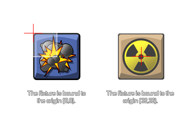

physics_fixture_bind(fixture, target)
| 参数 | 描述 |
|---|---|
| fixture | 待被绑定的支架 |
| target | 待接收支架的目标实例（可以是一个实例id、一个物体id、other或者all） |
返回： 实数型
一旦我们已经定义了我们的支架，它就要被绑定给一个实例。这也就是说它的属性被转移给一个实例，而不是实际支架本身，所以一个支架能够被绑定给多个实例如果所有的这些都具有相同的属性。你可以指定一个物体索引作为目标而房间内此时出现的所有实例都将会收到这个支架属性（而并不是新的接下来创建的物体实例），
or you can use the special keywords
other and all. You can even specify a parent object
and all children instances with that parent will also receive the
fixture. Once the fixture has been bound to all the instances that
you need, it can be deleted if no longer necessary and the
instances with that fixtures properties will not be affected and
maintain those properties.
The fixture will be bound to the instance with the center of mass
being positioned at the origin of the instance, and polygon
fixtures are bound based on the position of the points
relative to the origin. If you require your fixture to be
bound to a point other than the origin then you should be using
physics_fixture_bind_ext.
 The
function will also return a unique "id" value for the bound
fixture (not the fixture itself) which can then be used to
remove ("un-bind") the physics properties from the instance using
the function physics_remove_fixture.
This permits you to add and remove physical properties from an
instance without destroying and re-creating objects.
Note: Fixtures should be deleted when no longer needed as
failure to do so may cause a memory leak which will slow down and
eventually crash your game.
var fix, inst;
fix = physics_fixture_create();
physics_fixture_set_circle_shape(fix, 16);
physics_fixture_set_density(fix, 1.0);
inst = instance_create(x, y, genericBodyObject);
my_fix = physics_fixture_bind(fix, inst);
physics_fixture_delete(fix);
The code above will create a fixture and assign its index to the variable "fix". It then defines the shape and density of the fixture before binding it to the instance that was created with the index for the bound fixture stored in the variable "my_fix". Finally, the fixture is deleted to prevent memory leaks as it is no longer needed.
| Converted from CHM to HTML with chm2web Pro 2.85 (unicode) |